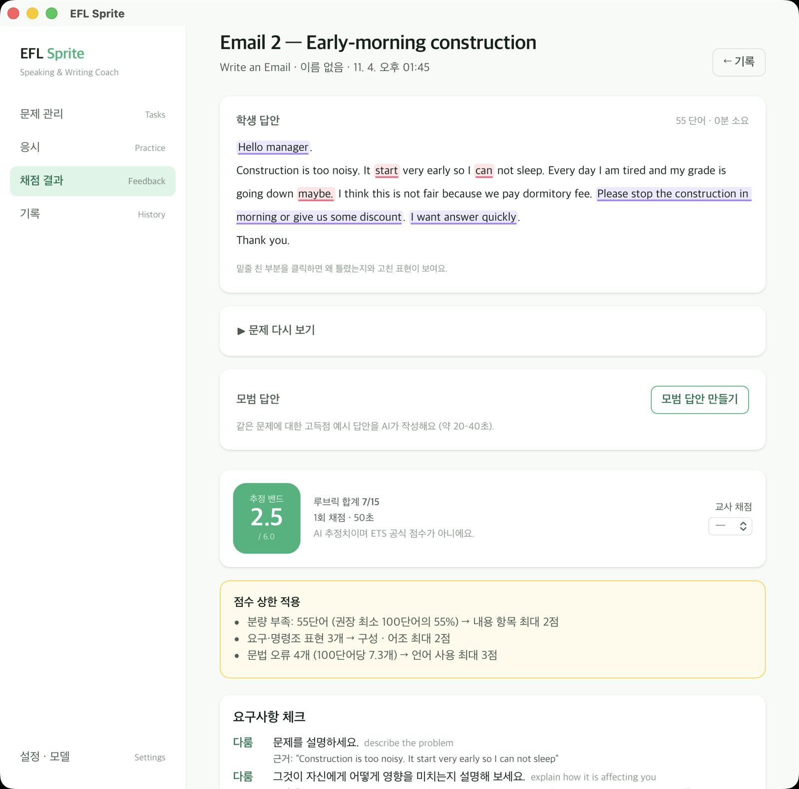
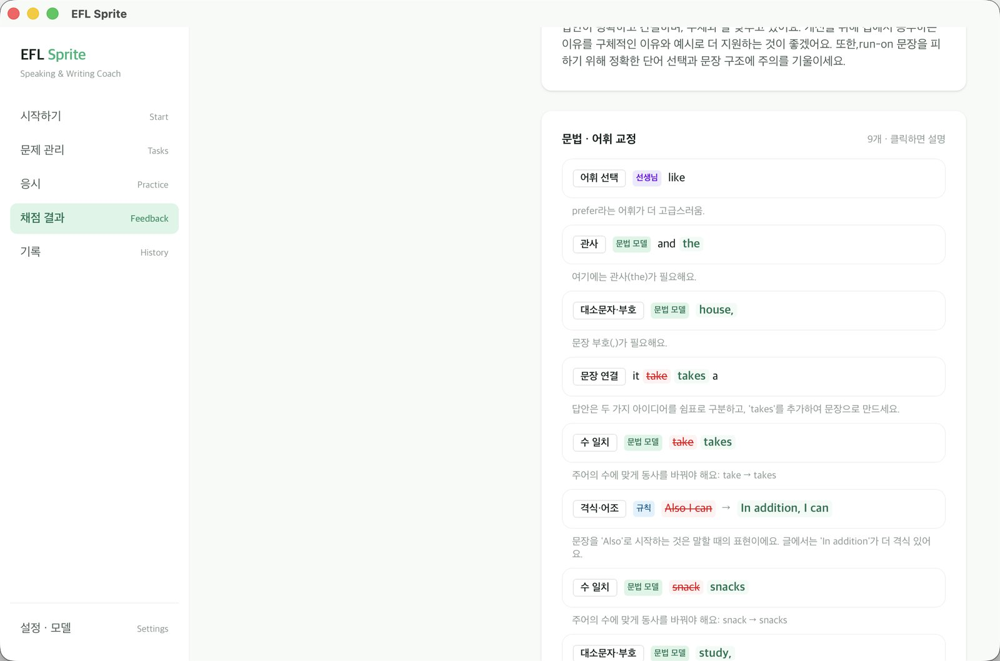
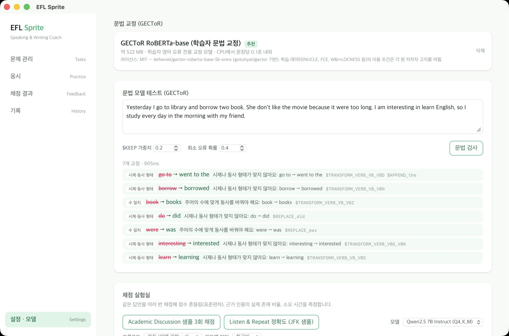
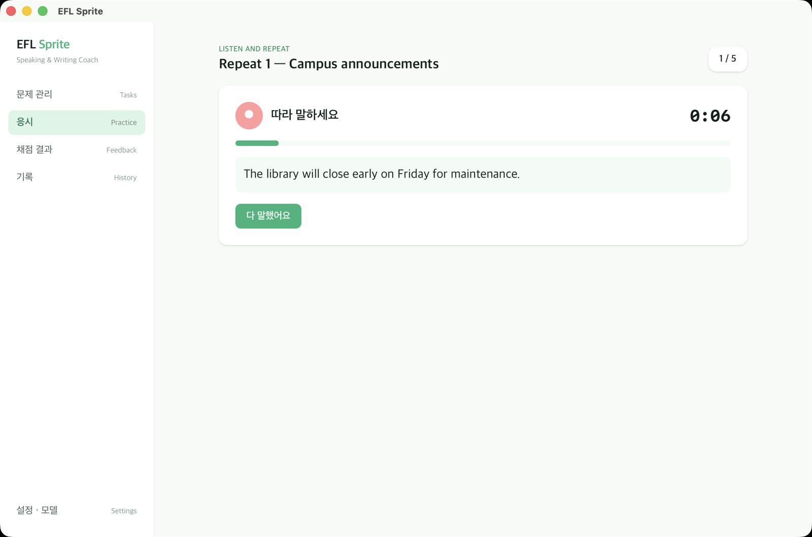
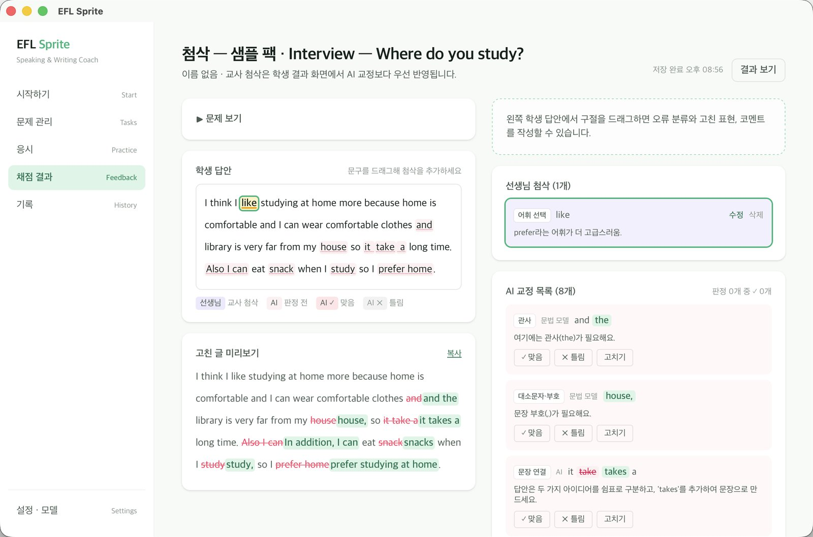
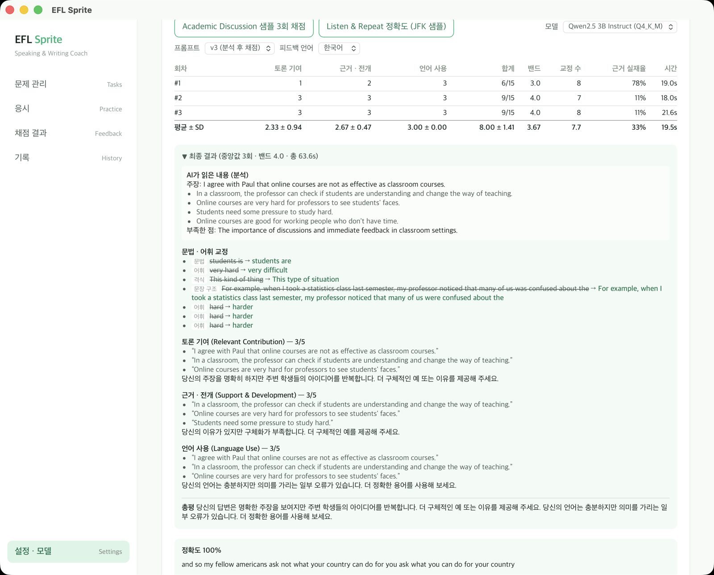
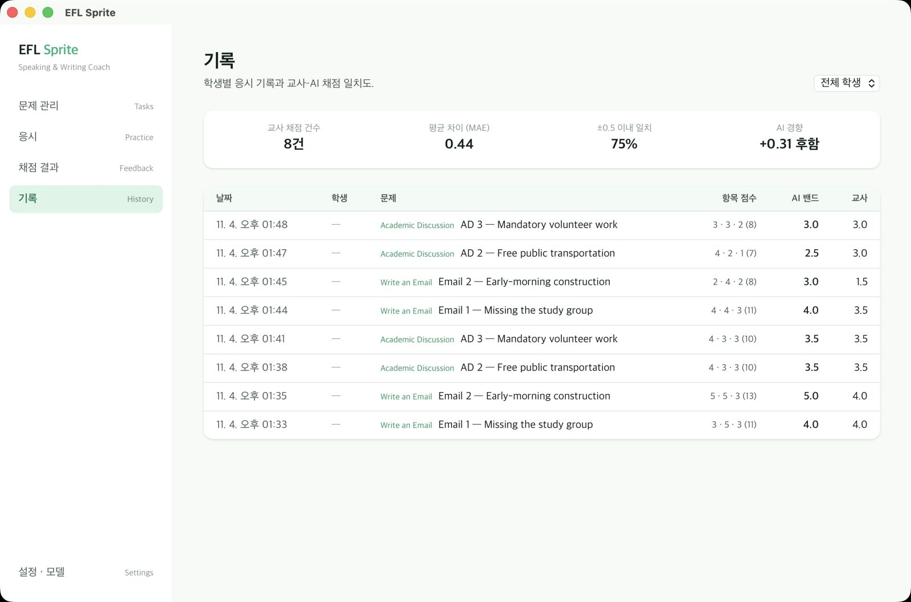
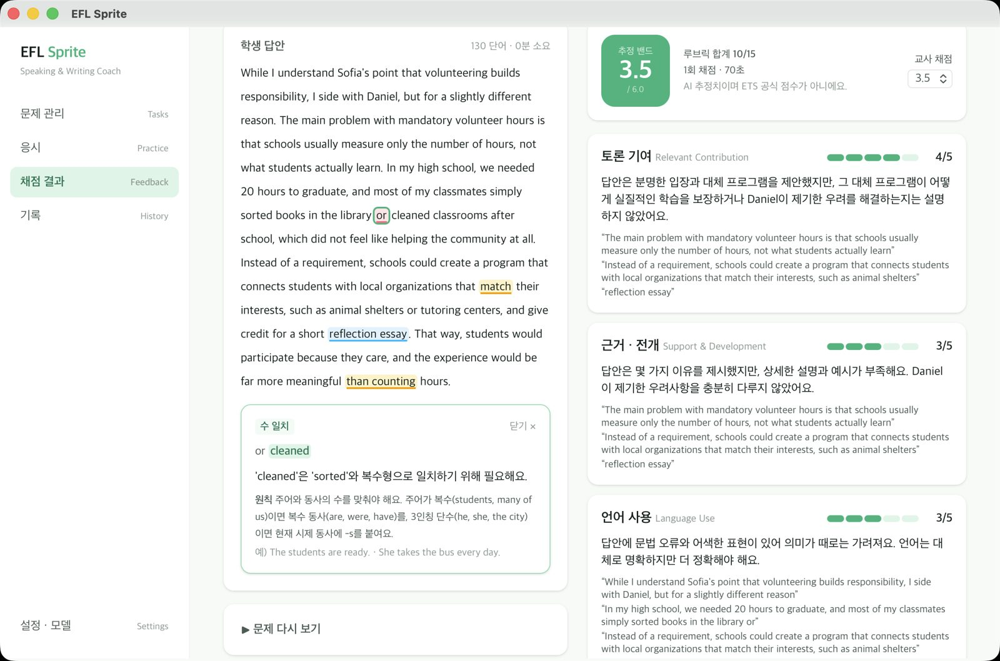
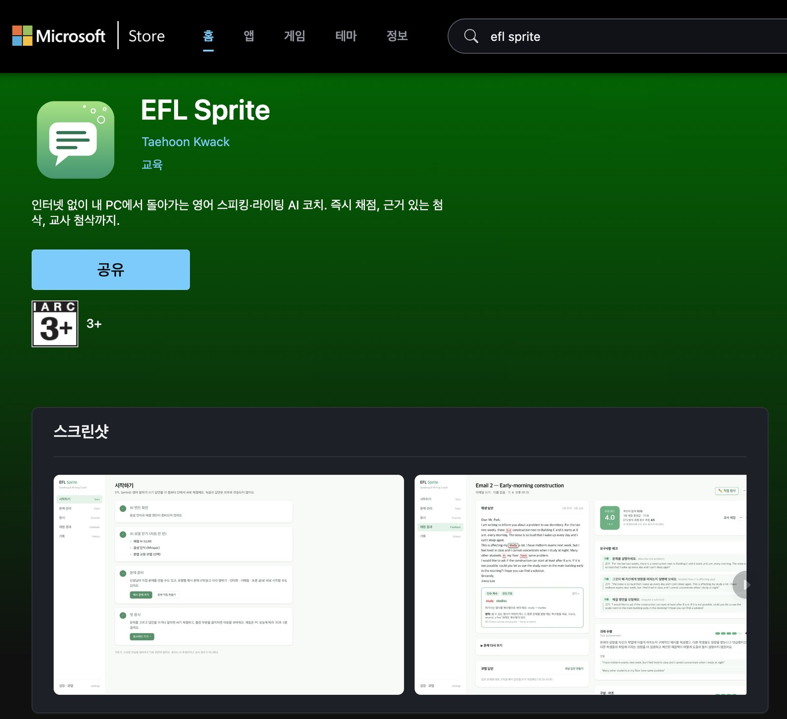

| 소속 | 단국대학교 SW융합대학 소프트웨어학과 |
| 학번 | 32210214 |
| 성명 | 곽태훈 (Taehoon Kwack) |
| 저장소 | github.com/sonnykwack/efl-sprite |
| 시연 영상 | youtu.be/Fr_a9Gi9KVw |
| 배포 | Microsoft Store — apps.microsoft.com/detail/9MZT0SB40M2W (MSIX, 2026. 11. 9. v0.1.0 게시, 11. 12. v0.1.1 업데이트 게시) |
영어 말하기·쓰기 연습은 강사의 첨삭 시간에 묶여 있다. 학생은 답안을 낸 뒤 피드백을 며칠씩 기다리고, 2026년 개편된 TOEFL iBT의 새 유형(Listen and Repeat, Take an Interview, Write an Email, Academic Discussion)을 연습하고 채점받을 도구는 거의 없다. 기존 AI 첨삭 서비스는 학생의 글과 목소리를 외부 서버로 보내야 하고, 점수의 근거를 설명하지 못하는 경우가 많다.
본 프로젝트는 모든 AI 추론을 사용자의 PC 안에서 수행하는 데스크톱 앱 EFL Sprite를 개발해 Microsoft Store에 배포했다. 음성 인식(Whisper), 채점용 대형 언어 모델(로컬 LLM), 학습자 문법 교정 모델(GECToR)을 하나의 파이프라인으로 묶고, 문법은 문법 모델과 규칙이, 내용과 논리는 LLM이 판단하도록 역할을 나눴다. 출력 형식은 JSON 스키마로 강제해 모델이 학생 문장을 먼저 인용한 뒤 점수를 내게 했고, 인용 위치 보정·재검증·상한 규칙·측정 언어 지표로 결과를 보정했다. 강사는 AI 첨삭을 검토하고 직접 첨삭할 수 있으며, 문제는 AI로 생성하거나 파일로 공유할 수 있다.
현직 TOEFL 강사(저자)의 블라인드 채점 8건과 비교한 결과 평균 절대 오차 0.44밴드, ±0.5밴드 이내 일치 75%를 보였고, 같은 답안을 반복 채점할 때의 항목 점수 표준편차는 0.94에서 0.00으로 줄었다. 앱은 macOS와 Windows에서 매 변경마다 자동 빌드되며, MSIX 패키지로 Microsoft Store 심사를 통과해 게시되었다.
저자는 영어 학원에서 TOEFL을 가르치고 있다. 읽기·듣기 영역은 정답이 있어 학생이 혼자 반복 연습할 수 있지만, 말하기·쓰기 영역은 답안마다 강사의 첨삭이 필요하다. 강사 한 명이 볼 수 있는 답안 수에는 한계가 있으므로, 학생의 연습량은 곧 강사의 시간에 비례하게 된다.
2026년 1월부터 TOEFL iBT는 시험 형식이 바뀌어 말하기에 Listen and Repeat, Take an Interview, 쓰기에 Write an Email, Academic Discussion 유형이 포함되었다. 새 형식에 맞춘 연습·채점 도구는 아직 드물다.
| 문제 | 내용 |
|---|---|
| 피드백 병목 | 답안 1건마다 강사 첨삭이 필요해 피드백이 지연되고 연습량이 제한된다. |
| 새 시험 형식 | 2026 TOEFL iBT의 새 유형을 실제 형식(타이머, 요구사항)대로 연습할 도구가 부족하다. |
| 클라우드 AI의 한계 | 학생 데이터를 외부 서버로 보내야 하고, 구독료가 들며, 네트워크가 제한된 학원 컴퓨터실에서 쓰기 어렵다. 점수의 근거를 설명하지 못하는 경우가 많다. |
| 범용 LLM 채점의 불안정성 | 같은 답안도 실행할 때마다 점수가 달라지고, 맞는 문장을 틀렸다고 하거나 실제 오류를 놓친다(6장 실험에서 확인). |
모든 추론을 PC 안에서 수행하는 데스크톱 앱으로 개인정보와 비용 문제를 해결하고, 채점을 규칙 · 학습자 문법 모델 · LLM의 역할 분담 구조로 설계해 정확도와 설명 가능성을 높인다. 강사는 AI 결과를 검토·수정하는 사람으로 루프에 참여한다(human-in-the-loop).
이름의 뜻. EFL은 English as a Foreign Language(외국어로서의 영어), Sprite는 앱이 다루는 두 영역인 Speaking과 Write(Writing)를 합친 말이다. 시험 상표(TOEFL·ETS)를 제품명에 쓰지 않으면서, 영어를 외국어로 배우는 학생의 말하기·쓰기를 돕는다는 목적을 이름에 담았다.
| ID | 요구사항 | 내용 |
|---|---|---|
| F1 | 4개 유형 응시 | 유형별 타이머·자동 제출. 스피킹은 문장 재생(TTS)과 녹음, "다음" 버튼 또는 제한 시간으로 진행 |
| F2 | 자동 채점 | 추정 밴드(1.0–6.0), 항목별 0–5점, 항목마다 학생 문장 인용 근거, 한국어 총평 |
| F3 | 교정 설명 | 밑줄 클릭 시 고친 표현(단어 단위 비교), 문장별 이유, 문법 원칙, 예문 |
| F4 | 이메일 요구사항 확인 | 문제가 요구한 항목을 다룸/부족/빠짐으로 판정하고 근거 문장 표시 |
| F5 | 언어 지표 | 분량, 어휘 다양성, 문장 구조, 문법 정확성, 연결어를 측정해 0–5와 개선 팁 |
| F6 | 스피킹 채점 | 따라 말하기 단어별 맞음/틀림/빠뜨림, 녹음 다시 듣기, 인터뷰는 전사문 + 유창성 지표로 채점 |
| F7 | 문제 관리 | 직접 출제·수정·삭제, 로컬 AI 문제 생성, .eflsprite 파일로 내보내기·가져오기(카카오톡·USB 배포) |
| F8 | 교사 첨삭 | 드래그로 구간 선택 → 오류 유형·고친 표현·코멘트, AI 교정 맞음/틀림 검토, 수정된 에세이, 학생 화면에 교사 첨삭 우선 반영 |
| F9 | 기록·일치도 | 학생별 기록, 교사 점수 입력, 교사–AI 일치도(MAE, ±0.5 비율, 경향), AI 교정 정확도 |
| F10 | 온보딩 | 엔진 확인 → 추천 모델 다운로드 → 예시 문제 → 첫 응시 체크리스트 |
| 항목 | 기준 |
|---|---|
| 개인정보 | 모델 다운로드 외 네트워크 사용 없음, 분석·광고 없음 |
| 일관성 | 같은 답안 반복 채점 시 항목 점수 표준편차 ≤ 0.5 |
| 성능 | Apple Silicon 기준 1회 채점 2분 이내 |
| 호환성 | macOS·Windows 동일 코드, 한글 사용자 폴더 경로에서 동작 |
| 신뢰성 | 답안은 채점 전에 저장(채점 실패 시에도 보존), 모든 대기 작업에 시간 제한과 오류 안내 |
| 배포 | Microsoft Store 정책 준수(MSIX, 권한 선언, 상표 표기) |
| 영역 | 선택 | 이유 |
|---|---|---|
| 앱 프레임워크 | Tauri v2 (Rust) + React/TypeScript | Electron 대비 작은 크기, Rust 백엔드에서 프로세스·파일·DB를 안전하게 다룸, macOS·Windows 단일 코드 |
| LLM 추론 | llama.cpp (llama-server) | GGUF 양자화 모델의 CPU/GPU(Metal, Vulkan) 추론, JSON 스키마 → 문법 제약 디코딩 지원, 병렬 슬롯 |
| 채점 모델 | Qwen2.5-7B-Instruct (Q4_K_M) | 3B·4B 대비 안정적인 판단(6장), 4.5 GB로 일반 노트북에서 실행 가능. 14B는 고정밀 옵션 |
| 음성 인식 | whisper.cpp (small.en) | 오프라인, 영어 전용 모델의 높은 정확도, Metal 가속 |
| 문법 교정 | GECToR RoBERTa-base (ONNX Runtime) | 학습자 영어(BEA, CoNLL)로 학습된 태깅 모델. 범용 LLM보다 학습자 오류에 정밀 |
| 저장 | SQLite (rusqlite) | 단일 파일, 마이그레이션 관리, 외부 서버 불필요 |
| 클라우드 AI 첨삭 서비스 | EFL Sprite | |
|---|---|---|
| 데이터 | 서버 전송 | 기기 안에서만 처리 |
| 네트워크·비용 | 상시 연결, 구독료 | 모델 다운로드 후 오프라인, 무료 |
| 시험 형식 | 범용 에세이 | TOEFL iBT 2026 4개 유형 |
| 근거 | 점수 위주 | 항목별 학생 문장 인용, 측정 지표, 교정 이유·원칙 |
| 문법 교정 | LLM 단일 판단 | 규칙 + 학습자 문법 모델 + LLM, 재검증 |
| 교사 역할 | 없음 | 교사 첨삭이 AI보다 우선, AI 교정 정확도 측정 |
UI(React)는 모든 백엔드 호출을 api.ts 한 곳을 통해 Tauri 명령으로 보낸다. Rust 백엔드는 SQLite, 모델 다운로드, 녹음 파일, 그리고 세 개의 추론 엔진을 관리한다. LLM과 Whisper는 별도 프로세스로 실행하고, GECToR는 ONNX Runtime 동적 라이브러리를 Rust에서 직접 호출한다.
설계 원칙은 다음과 같다.
evidence → comment → score로 고정하고, 직렬화 단계에서도 키 순서를 보존(preserve_order)한다. 모델은 학생 문장을 인용해야만 점수를 낼 수 있다.response_format: json_schema로 출력 형식을 토큰 단위에서 강제한다. 형식이 깨진 응답이 원천적으로 생기지 않는다.| 테이블 | 주요 컬럼 | 비고 |
|---|---|---|
| tasks | section, task_type, title, prompt, material, prep_seconds, response_seconds | 유형은 수정 불가(채점 기준 보존) |
| students | name | 선택 입력 |
| attempts | task_id, student_id, response_text, audio_path, duration_seconds, teacher_review(JSON) | 채점 전에 먼저 저장 |
| evaluations | attempt_id, model_id, rubric_json, total_score(밴드), teacher_score, latency_ms | 재채점 시 새 행 추가(이력 보존) |
스키마 버전은 PRAGMA user_version으로 관리하며(v1→v3), 마이그레이션 중 외래 키 무결성을 검사한다.
소스 코드는 TypeScript/TSX 약 10,400줄(46개 파일), Rust 약 2,600줄(12개 파일)이며, Git 커밋 71개(2026-11-12 기준)로 관리했다. 화면 코드는 초기 버전 이후 저자가 참조 작성하였다(8장).

결과 화면은 점수 상한이 적용된 이유(분량 부족, 명령조 표현, 오류 밀도), 요구사항별 판정과 근거, 항목별 점수와 인용 근거, 언어 지표, 한국어 총평, 교정 목록을 차례로 보여 준다. macOS의 WebView(WKWebView)는 마우스 오버 툴팁을 표시하지 않으므로, 교정 설명은 클릭형 카드로 구현했다.

GECToR는 단어마다 편집 태그($KEEP, $DELETE, $REPLACE_x, $APPEND_x, $TRANSFORM_VERB_VB_VBZ 등)를 예측하는 태깅 모델이다. 참고 구현(gotutiyan/gector)의 추론 로직을 Rust로 옮기고 ONNX Runtime(ort 크레이트, 동적 로딩)으로 실행했다.
$START 토큰, 단어별 첫 서브워드 라벨, $KEEP 편향, 최소 오류 확률, 최대 3회 반복 교정, 동사 형태 사전
채점은 영어로 추론하고 결과만 한국어로 번역한다(한국어로 직접 쓰게 하면 판단 품질이 떨어짐, 6.2). 초기 구현에서는 여러 문장을 한 번에 번역하다 출력이 중국어로 무너지고, the response를 "반응"으로 직역하는 문제가 있었다. 이를 다음과 같이 해결했다.
pattern으로 한글 + ASCII만 생성 가능하도록 문자 집합을 제한(한자·가나 생성 불가)

| 문제 | 처리 |
|---|---|
Windows 한글 사용자 폴더(C:\Users\홍길동)를 C++ 엔진이 ANSI 코드 페이지로 열다 실패 | 엔진 인자는 데이터 폴더 기준 상대 경로 + ASCII 파일명으로만 전달 |
| 엔진 실행 시 콘솔 창 깜빡임 | Windows에서 CREATE_NO_WINDOW로 자식 프로세스 생성, 앱 종료 시 정리 |
| Windows는 열린 파일을 이름 변경·삭제할 수 없음 | 다운로드는 .part로 받은 뒤 핸들을 닫고 교체, 모델 삭제 전 서버 종료 |
| macOS WebKit은 클릭 직후에만 오디오 시작 허용 | 오디오 컨텍스트를 클릭 핸들러 안에서 동기적으로 생성, 모든 대기에 시간 제한 |
| 모델별 메모리 | 카탈로그에 모델별 병렬 슬롯·컨텍스트 지정(7B 3×8192, 14B 2×6144) |
모든 실험은 앱의 채점 실험실(같은 답안 N회 반복 채점 → 항목별 평균±표준편차, 근거 일치율, 소요 시간)과 기록 화면에서 측정했으며, 원자료는 저장소의 docs/scoring-experiments.md에 있다. 기준 점수는 현직 TOEFL 강사인 저자의 판단이다.

Academic Discussion 답안(약 130단어)에 대한 교사 판단은 밴드 3.0–3.5였고, 근거로 7개 항목(Because로 시작하는 조각문, many of us was 수일치, so 대신 therefore/thus, 모호한 어휘 thing·some, 소유격 누락, 이유의 깊이 부족)을 제시했다.
| 구성 | 모델 | 항목 SD(최대) | 최종 밴드 | 근거 일치 | 관찰 |
|---|---|---|---|---|---|
| v1 한국어 직접 출력 | Qwen2.5-3B | 0.94 | 2.0–2.5 | 100% | 교사보다 1밴드 낮음, 실제 오류 미검출, 코멘트가 틀림 |
| v2 오류 목록 우선 + 별도 번역 | Qwen2.5-3B | 0.94 | 3.5 | 67% | 수준은 맞으나 조각문·어조·어휘 미검출 |
| v3 분석 → 채점 | Qwen2.5-3B | 0.94 | 4.0 | 33% | 소형 모델 과부하, 잘못된 교정 반복 |
| v3 분석 → 채점 | Qwen2.5-7B | 0.47 | 3.5 | 57% | 안정적, 근거 부족(인용을 고친 형태로 함) |
| v3 + 규칙 + 인용 스냅 | Qwen2.5-7B | 0.00 | 4.0 | 67→96% | 교사 지적 5개 항목 모두 검출, 밴드 환산이 후함 |
v3+규칙 구성에서 항목 점수는 타당했으나 선형 밴드 환산이 후하다는 점이 드러나, 이후 구간별 환산표와 보정 앵커(v4)로 이어졌다. 3개 표본을 llama-server 병렬 슬롯으로 동시에 처리해 전체 시간을 140초에서 93초로 34% 줄였다.
조정에 쓰지 않은 답안 세트(이메일 2문제 × 2수준, 토론 2문제 × 2수준)를 저자가 앱 결과를 보기 전에 블라인드로 채점했다. 첫 측정에서 55단어 명령조 이메일(교사 1.5)이 4.0을 받는 등 이메일이 과대평가되었고, 요구사항 개별 판정·어조 상한·오류 밀도 상한·환산표 조정 후 다시 측정했다.

| 지표 | 값 | 해석 |
|---|---|---|
| 평균 절대 오차(MAE) | 0.44 밴드 | 밴드 단위(0.5)보다 작은 평균 차이 |
| ±0.5 밴드 이내 일치 | 75% (6/8) | Academic Discussion 4건은 모두 정확히 일치(조정 전 측정) |
| 경향(AI−교사) | +0.31 | 여전히 약간 후함. 차이는 주로 저수준 이메일 |
| 과대평가 사례 | 4.0 → 2.5 | 교사 1.5. ETS 기술(2–3/5 수준)과 비교해 추가 조정은 보류 |

거의 오류가 없는 Academic Discussion 답안에서 문법 모델은 0건을 보고했지만 LLM은 4건의 잘못된 교정을 냈다. 긴 채점 프롬프트 안에서 "오류를 찾으라"고 요구하면 소형 LLM은 오류가 없어도 만들어 낸다. 문법 범주를 문법 모델·규칙에만 맡기고 LLM 제안은 별도 호출(문장 전체 제시, 이유 → 판정)로 재검증하도록 바꿔, 같은 유형의 가짜 교정이 표시되지 않게 했다. 학습자 오류가 많은 답안에서는 문법 모델과 어조 규칙이 주요 오류를 그대로 검출했다. 문법 모델은 의도적으로 넣은 오류 7개를 모두 검출했고(잘못된 교정 0건, 모델 로딩 포함 0.9초), 이후 교사 첨삭 화면의 맞음/틀림 기록으로 AI 교정 정확도를 지속적으로 측정할 수 있게 했다.
| 항목 | 내용 |
|---|---|
| 스토어 주소 | https://apps.microsoft.com/detail/9MZT0SB40M2W (무료, 교육 카테고리, IARC 3+) |
| 패키지 형식 | MSIX. EXE/MSI 설치 파일 제출은 유료 코드 서명 인증서가 필요하지만, MSIX는 심사 후 Microsoft가 서명한다. |
| 패키지 ID | TaehoonKwack.EFLSprite (Partner Center 발급), Store ID 9MZT0SB40M2W |
| 권한 | runFullTrust(포함된 추론 엔진 실행), microphone(스피킹) |
| 패키징 | 릴리스 빌드 → 스크립트가 실행 파일·엔진·스토어 아이콘·매니페스트를 배치 → makeappx로 패키지, 테스트용 자체 서명본과 인증서 동시 생성 |
| 크기 | 약 57 MB (AI 모델은 첫 실행 때 앱 안에서 내려받음) |
| 정책 대응 | 개인정보처리방침 공개, 심사관용 테스트 절차·권한 사유 작성, 제품명에 상표 미사용 및 상표 고지 |
| 심사 경과 | 11/8 제출 → 1차 반려(정책 10.1.1.3 부정확한 표현: 스크린샷에 macOS 창 테두리가 보임. 패키지·권한은 통과) → 운영체제와 무관한 앱 화면만 남기도록 스크린샷 수정 후 재제출 → 11/9 게시 |
| 업데이트 | v0.1.1(11/12): 화면 참조 작성, 실기기 테스트에서 찾은 문제 수정(7.3), 백엔드 일부 개선을 반영한 패키지를 GitHub Actions에서 빌드해 Partner Center에 업데이트로 제출, 같은 날 인증을 통과해 게시. 게시 후 스토어 페이지에 새 화면 스크린샷이 반영된 것을 확인(그림 11) |

.. 우회 차단 포함), 문제 파일, 저장 경로, GECToR 태그 적용·편집 추출 등)와 합성 모델 통합 테스트 1개.| 증상 | 원인 → 조치 |
|---|---|
| macOS 동적 라이브러리를 찾지 못함 | 심볼릭 링크가 복사 후 깨짐 → 실제 파일로 복사, 정리 후 실행 확인 |
| 모델 중복 다운로드 시 파일 오류 | 동시 요청 → 진행 중 다운로드 중복 방지 |
| 스피킹 "시작"이 반응 없음 | WebKit 오디오 시작 규칙, 개발 모드의 화면 재마운트 시 상태 초기화 누락 → 동기 생성, 상태 재설정, 시간 제한 |
| 교정 밑줄이 엉뚱한 단어에 표시 | 모델 인용이 교정문보다 짧음 → 정렬 비용이 최소인 범위로 확장 |
| 문제 삭제 시 기록이 경고 없이 삭제 | CASCADE 삭제 → 함께 지워지는 기록 수를 보여 주고 확인 |
| 따라 말하기에서 "twenty"를 맞게 말해도 감점(4/5) | Whisper가 "20"으로 받아 적음, 숫자 변환표가 0–12뿐 → 0–99 변환(두 단어 숫자 포함), 재채점 5/5 |
| 시작 직후 첫 문장 음성의 앞부분이 잘림 | 마이크를 열 때 OS 오디오 장치 전환 → 마이크를 연 뒤 0.8초 대기 |
| 따라 말하기 중 잠깐 멈추면 녹음이 끊김 | 1.5초 침묵 자동 정지 → 연습 흐름에 맞게 제거, "다음" 버튼과 제한 시간으로 진행 |
| "eat snack → snacks"를 동사 수 일치로 설명 | 문법 모델이 명사 복수에도 동사 변형 태그를 씀 → 앞 단어가 소유격·전치사·타동사면 복수형으로 분류 |
| 요구사항 상태 배지 "다룸"이 두 줄로 쪼개짐 | 긴 문장 옆에서 배지가 줄어들고 한국어는 글자 사이에서 줄바꿈 → 배지 크기 고정 |
개발은 "요구사항·기준 정의 → 구현 → 실기기 실행과 채점 비교 → 문제 발견과 개선 방향 제시"를 하루 단위로 반복했다. 구현에는 AI 코딩 도구(Anthropic Claude Code)를 활용했다. 초기 버전은 AI 도구가 전체 코드를 작성하였고, 이후 저자가 화면(프론트엔드) 코드를 참조 작성하였다. 여기서 참조 작성이란, AI 도구가 만든 초기 버전을 참조하여 구조와 동작을 이해한 뒤 직접 다시 작성한 것을 말한다. 최종 코드 기준 역할 분담은 다음과 같다.
| 영역 | 담당 | 내용 |
|---|---|---|
| 화면 (프론트엔드) | 저자 (참조 작성) | 학생·교사가 쓰는 모든 화면(응시, 녹음, 채점 결과, 교사 첨삭, 문제 관리·공유, 기록, 설정, 문법 모델 실험). 채점 실험실(측정 도구)만 AI 작성본 유지 |
| 엔진·모델·채점 로직 (백엔드) | AI 도구 | 추론 엔진 실행·관리, 문법 모델(GECToR) 포팅, 채점 파이프라인, 데이터베이스 |
| 백엔드 일부 | 저자 (참조 작성) | 문제 파일, 저장 경로, 녹음 파일 처리(taskfile.rs, paths.rs, audio.rs), 따라 말하기 숫자 정규화, 문법 모델 오류 분류 보정 |
| 기획·채점 기준·검증·배포 | 저자 | 현장 문제 정의, 4개 유형 선정, 기준 답안 채점과 오류 지적, 블라인드 채점, 프롬프트 실험 방향 결정, 실기기 테스트, Microsoft Store 등록·심사 대응 |
엔진·모델·채점 로직을 AI 도구로 작성한 이유.
참조 작성 과정에서는 초기 버전의 버그(모델 다운로드 실패 후 화면이 멈춤, 문장을 고친 뒤 예전 위치로 교정을 표시, 모범 답안이 예전 채점 기록에 저장, macOS에서 보이지 않는 툴팁 등)를 함께 고쳤고, 교사가 3.0으로 채점한 답안을 다시 채점해 같은 3.0이 나오는 것으로 채점 결과가 바뀌지 않았음을 확인했다. 참조 작성 이후 AI 도구로 수정한 부분은 두 커밋(교정 목록 배지 크기 조정, 녹음 화면 버그 3건)이다.
| 저자가 발견한 문제 | 바뀐 설계 | 결과 |
|---|---|---|
| AI가 조각문·수일치·so·모호 어휘를 놓침 | 결정적 규칙 검사, 인용 스냅 | 5개 항목 검출 |
| 점수가 전반적으로 후함 (55단어 이메일 4.0) | 보정 앵커, 상한, 구간별 환산표 | 4.0 → 2.5 |
| 마우스 오버로는 고친 표현이 안 보이고 이유가 없음 | 클릭형 교정 카드, 오류 분류와 원칙 | 교정마다 이유 |
| 전문 문법 모델이 필요함 | GECToR 도입(Rust 포팅) | 7/7 검출 |
| 피드백 한국어가 부자연스러움(반응, 한자) | 문자 집합 제약, 문장 단위 번역, 검증 | 깨진 번역 차단 |
| 요구사항을 썼는데도 빠졌다고 판정 | 요구사항별 개별 판정(인용 → 판정) | 판정 근거 표시 |
| 맞는 문장에 엉뚱한 문법 교정 | 정확도 우선 구조, LLM 교정 재검증 | 가짜 교정 제거 |
| 교사 점수는 ETS 기준이 아닌 주관 판단 | 평가 주장 범위 재정의, 최종 검증 계획 | 정직한 보고 |
| 학생이 문제를 일일이 입력하기 어려움, 교사가 AI를 바로잡아야 함 | AI 문제 생성, 파일 공유, 교사 첨삭 | 학원 운영 흐름 |
Co-Authored-By: Claude 표시는 AI 도구가 참여한 커밋을 뜻하며, 화면 참조 작성 커밋은 저자 단독 커밋으로 남아 있다. 평가용 답안(ES-1)은 저자가 정한 수준에 맞춰 AI 도구로 초안을 작성한 뒤 저자가 블라인드로 채점했다. 앱 안의 AI 모델(Whisper, Qwen, GECToR)은 제품 구성 요소로 개발 도구와 별개이다. 모든 결과물은 저자가 실행·검토했으며 책임은 저자에게 있다.
EFL Sprite는 학생 데이터를 기기 밖으로 내보내지 않으면서 TOEFL iBT 2026 형식의 말하기·쓰기 연습에 근거 있는 피드백을 주는 데스크톱 앱이다. 단일 LLM에 채점을 맡겼을 때 나타난 불안정성(반복 채점 표준편차 0.94), 과대평가, 가짜 교정, 깨진 한국어 피드백을 역할 분담 구조 · 출력 형식 강제 · 측정 지표 · 다단계 검증으로 해결했고, 현직 강사 판단과 평균 0.44밴드 차이를 보였다. 교사 첨삭과 문제 공유 기능으로 AI를 강사를 대체하는 도구가 아닌 강사의 검토를 돕는 도구로 자리매김했으며, 두 운영체제 자동 빌드와 MSIX 패키징으로 실제 스토어 배포까지 진행했다.
| 대상 | 방법 |
|---|---|
| Windows (일반) | Microsoft Store에서 "EFL Sprite" 설치, 또는 GitHub Release의 설치 파일 실행 |
| macOS (Apple Silicon) | GitHub Release의 앱 압축 파일 → 응용 프로그램 폴더 → 우클릭 → 열기 |
| 개발 환경 | npm install → npm run fetch-engines → npm run tauri dev |
| 첫 실행 | 시작하기 → 추천 모델 받기(약 5 GB) → 예시 문제 추가 → 응시 |
| 경로 | 내용 |
|---|---|
src/ | React UI — 페이지, 피드백·녹음·첨삭 컴포넌트, 채점 파이프라인(src/lib) |
src-tauri/src/ | Rust 백엔드 — 경로, DB, 모델 다운로드, 오디오, 문제 파일, 엔진(engine/) |
src-tauri/msix/, scripts/ | 스토어 매니페스트·패키지 ID, 엔진 다운로드·MSIX 패키징 스크립트 |
docs/ | 개발 가이드, 개발 과정 기록, 채점 실험 기록, 평가 답안 세트, 개인정보처리방침, 스토어 등록 정보, 시연 대본, 보고서 원본(report-source/) |
EFL-Sprite_결과보고서.pdf | 본 보고서 (저장소 최상위) |
samples/ | 예시 문제 파일(.eflsprite) |
Tauri (MIT/Apache-2.0) · llama.cpp (MIT) · whisper.cpp (MIT) · ONNX Runtime (MIT) · OpenAI Whisper 모델 (MIT) · Qwen2.5-7B/14B-Instruct (Apache-2.0) · GECToR RoBERTa-base 5k ONNX — letheviet/gector-roberta-base-5k-onnx, gotutiyan/gector 기반 (MIT, 학습 데이터는 비상업 이용 조건) · 선택 모델: Qwen2.5-3B-Instruct (Qwen Research License, 비상업·연구용 전용), Gemma 3 4B (Gemma Terms of Use). 저작권 고지 전문은 저장소의 THIRD_PARTY_NOTICES.md.
TOEFL은 ETS의 등록 상표이며, EFL Sprite는 ETS와 관련이 없고 ETS의 승인을 받지 않았습니다. 앱의 점수는 AI 추정치로 공식 점수가 아닙니다.